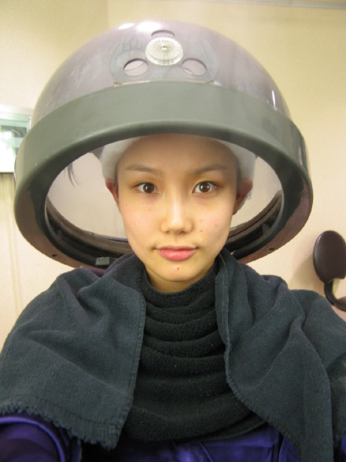
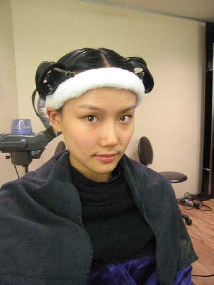
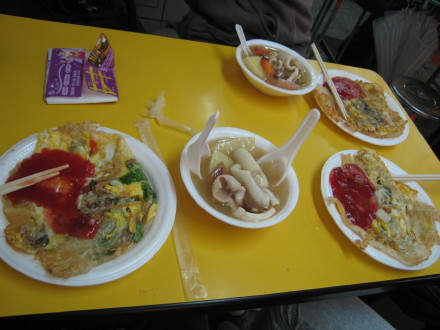
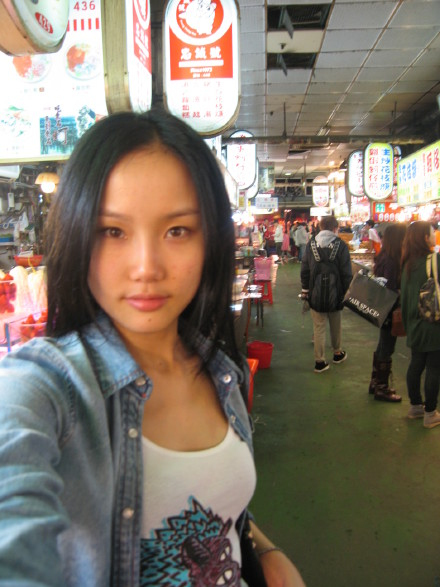
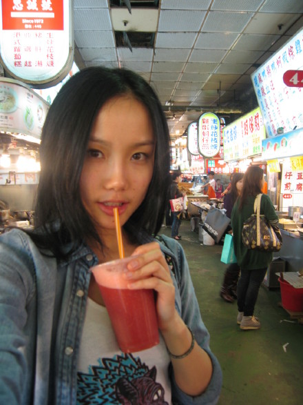

16号晚上就要播我的星光踢馆赛了，大家没装卫星的在网上看吧
台北之行还算顺利，很高兴和星光的同学静距离交流，也许大家都知道结果了。。。
第二张专辑MV拍摄的整个过程很浪漫，第一次与赖伟康导演合作，第一次拍MV和男主角互动。。。
不能多透露了，说说遗憾吧，我对自己的踢馆表现除了唱歌，其他都满意，哈，紧张真的会失控。。。
总之这次台北之行让我更喜欢这个地方了，分享一下台北之行的照片吧
拍MV前一天工作人员带我做头发护理，我不是很喜欢别人叫我艺人，也不喜欢那些艺人一定要化妆之类无聊的话

我喜欢这个造型，

我最最最爱的食物，到了台北，只要给我蚵仔煎就满足了。。。

台北的同事带我逛士林夜市


